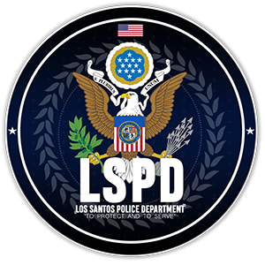

Los Santos Police Department to jedna z najważniejszych frakcji na serwerze 77RP. Naszym celem jest zapewnienie porządku i bezpieczeństwa w mieście Los Santos. Każdego dnia dbamy o to, by mieszkańcy mogli czuć się bezpiecznie, a przestępcy byli skutecznie ścigani.
Na naszej stronie znajdziesz informacje o naszej frakcji, aktualnych wydarzeniach, a także dowiesz się, jak dołączyć do naszego zespołu. Jeśli masz pytania lub potrzebujesz pomocy, zapraszamy do kontaktu.
[770] Director of LSPD - Mark Mallboro
[771] Deputy Director of LSPD - Aron Davis
Najwyższe dowództwo, składające się z wysoce doświadczonych i wysoko postawionych organów LSPD, odpowiedzialnych za strategiczne planowanie, podejmowanie kluczowych decyzji oraz koordynowanie funkcjonowania całej jednostki.
Chief of Police [101] - Lola Badclick

Assistant Chief of Police [102] - Mason Murphy

Deputy Chief of Police [103] - Christopher Burns

Commander [104] - Leo Badclick

San Andreas State Police jest agencja rządową stanu San Andreas, pełni rolę policji stanowej. Organizacja odpowiedzialna za egzekwowanie prawa. Działanie frakcji skupia się na patrolach dróg stanowych oraz protekcji obiektów podlegających pod stan. Departament posiada również specjalną jednostkę odpowiedzialną za ochronę wyższych urzędników stanowych i członków sądownictwa stanowego.
Głównym zdaniem szeryfów jest patrolowanie i pilnowanie przestrzeganie prawa na obszarach okolic Sandy Shores, Grapespeed oraz Paleto Bay oraz Los Santos. Szeryfosto zawsze służy wsparciem dla PD w Los Santos w razie sytuacji nadzwyczajnych.
SAN ANDREAS STATE PARK RANGERS to jedna z licznych straży leśnych funkcjonujących w obrebię San Andreas. Głownym zadaniem San Andreas Park Rangers jest dbanie o zieleń, a także poza partroli lasów, dróg off-roadowych zadaniem San Andreas Park Rangers jest prowadzenie poszukiwań, dbanie o życie jak i mienie ludzi i zwierząt - działa też w pomocy dla innych instytucji rządowych. SAPR jest upoważnione do wystawiania mandatów oraz pouczeń osobą zakłócających lub niszczących porządek i przyrodę, a nawet tymczasowego zatrzymania podejrzanego aby dalej przekazać odpowiednim instytucją.
 Assistant Chief
Assistant Chief Chief of Police
Chief of Police